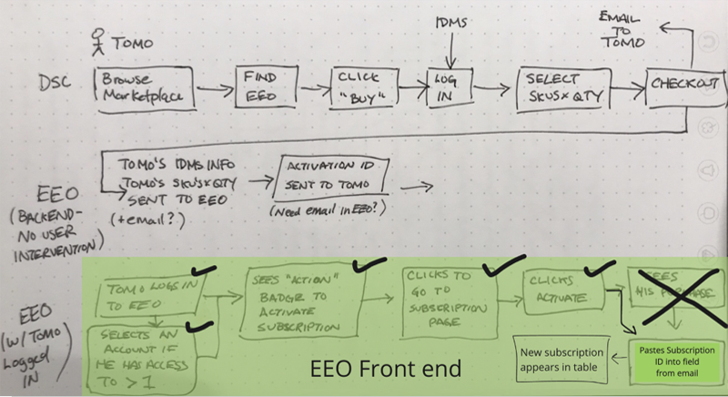
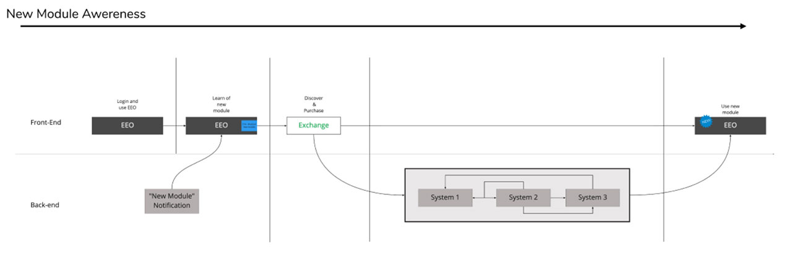
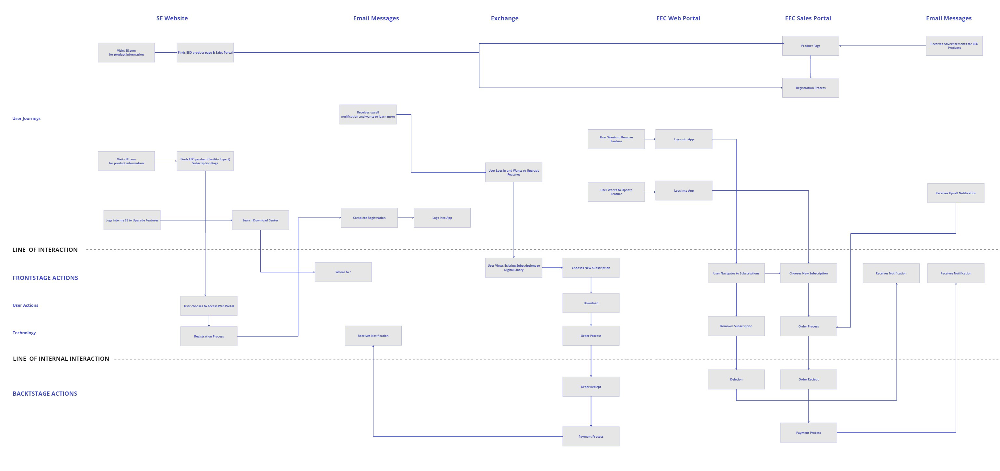

Research · Discovery artifacts
Mapping the problem before designing the solution.
Three artifacts produced directly from customer interviews and workflow observation sessions with Schneider facilities managers and maintenance technicians — recruited through internal Schneider channels. All three completed before any wireframe was drawn.


